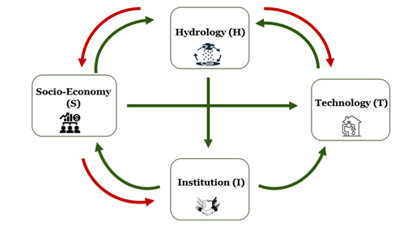

Three Core Pillars
Our research is built upon three core pillars—Complexity Science, Physically-Based Models, and Exponential Technologies—which together form the foundation of our pursuit toward Environmental Intelligence. Each pillar represents a distinct yet interconnected way of exploring, understanding, and unfolding the coupled human–natural systems that define our changing planet.
Complexity Science
Complexity science serves as the lens through which our laboratory perceives and interprets environmental systems. Every system that becomes the subject of our modeling is inherently complex, and by understanding and interpreting this complexity, we aim to realize environmental intelligence.
The idea that “everything flows” (Panta Rhei)—first proposed by the ancient Greek philosopher Heraclitus—captures the essence of humanity’s understanding of nature and existence. It denies the permanence of being and emphasizes that all things are in a continuous process of change. This principle of universal flux forms the philosophical premise of complexity, and complexity science, in turn, represents its scientific embodiment.
In this context, our lab has employed Sociohydrology as an illustrative example of understanding and interpreting complexity in coupled human–natural systems. Dr. Jeong’s perspective on this approach is presented in his article
The Present and Possible Future of Sociohydrology.
Representative publications
-
Jeong, H., Bhattarai, R., Adamowski, J., & Yu, D. J. (2020).
Insights from socio-hydrological modeling to design sustainable wastewater reuse strategies for agriculture at the watershed scale.
Agricultural Water Management.
-
Yu, D. J., Haeffner, M., Jeong, H., Pande, S., Dame, J., Di Baldassarre, G., Garcia-Santos, G., Hermans, L., Muneepeerakul, R., Nardi, F., Sanderson, M. R., Tian, F., Wei, Y., Wessels, J., & Sivapalan, M. (2022).
On capturing human agency and methodological interdisciplinarity in socio-hydrology research.
Hydrological Sciences Journal.
Physically-Based Models
Physically-based models are the most essential research tools in our laboratory. They represent the intellectual culmination of centuries of curiosity from brilliant scientists and persistence from countless ordinary ones, enabling us to mathematically describe natural processes and to explore the causes and dynamics of environmental phenomena under explicit scientific assumptions.
Effective environmental management requires a clear understanding of both the causes of environmental problems and the transformations they induce in natural systems. This entails viewing the system of interest as a white box—a system whose internal mechanisms are transparent and interpretable. Thus, continuous efforts are needed to improve our scientific representation of natural processes. At the same time, the assumptions employed in physically-based modeling play a decisive role: when they are flawed, they may lead to entirely different narratives of change and alternative futures.
Our research group has primarily focused on the hydrosphere as the central domain of inquiry. Through this work, we have come to recognize that achieving a truly white-box understanding of the environment requires the explicit inclusion of human processes as endogenous variables, which poses a profound scientific challenge. Dr. Jeong’s perspective on this issue is elaborated in his article
The SOHO Hydrological Modeling Framework.
“Everything flows—and everything is interconnected. Physically-based hydrological modeling, grounded in static conditions, remains valid and reliable in most cases. However, in an era dominated by uncertainty and complexity, such as the climate crisis, the true mission of hydrological modeling is not to predict a single future but to explore multiple possibilities and pathways, revealing even the ‘unknown unknowns’ that lie beyond our current perception. The SOHO (Self-Organizing, Holarchic, Open systems) framework represents a philosophical shift in hydrological modeling by integrating the deterministic Newtonian view of physical processes with the Darwinian view that emphasizes the evolutionary and adaptive nature of social systems. This synthesis enables a more holistic understanding of the complex interactions between human and water systems.”
Representative publications
-
Jeong, H., Pittelkow, C. M., & Bhattarai, R. (2019).
Simulated responses of tile-drained agricultural systems to recent changes in ambient atmospheric gradients.
Agricultural Systems.
-
Jeong, H., Bhattarai, R., & Hwang, S. (2019).
How climate scenarios alter future predictions of field-scale water and nitrogen dynamics and crop yields.
Journal of Environmental Management.
-
Kim, J., Her, Y., Bhattarai, R., & Jeong, H. (2023).
Improving nitrate load simulation of the SWAT model in an extensively tile-drained watershed.
Science of The Total Environment.
Exponential Technologies
Dr. Jeong was initially deeply skeptical about artificial intelligence. Informed decision-making—an ideal that his research has long pursued through the white-box transparency of physically-based models—seemed fundamentally incompatible with the black-box nature of AI, which often lacks interpretability and explainability.
However, as he came to recognize the necessity of modeling humans to better understand environmental systems as complex systems, he experienced a personal realization. It appeared both ironic and inspiring that modern AI itself originated from an attempt to model human cognition. This realization led him to see the potential of machine learning as a tool not merely for prediction, but for representing and interpreting human and societal behaviors within environmental systems.
Our laboratory has since explored the use of artificial intelligence as a means of human social sensing—that is, interpreting unstructured data that reflect human activities and societal responses to environmental change. We are particularly interested in how such approaches can be integrated with physically-based models, bridging the physical and social dimensions of environmental systems. Dr. Jeong’s thoughts on this integration can be found in his article
Digilog Water Management.
“Digital water management, supported by structured information from diverse devices, assists and sometimes even automates decision-making. Yet, the emergence of human wisdom—which cannot be learned by machines—and the awareness of unknown unknowns must remain human responsibilities. … ‘Digilog’ water management can be defined as a reflective process of rethinking the human role within the paradigm of digital water management. It represents the fusion of digital water management, oriented toward the present and the future, with analog water management, which embodies the continuity that connects the past, the present, and the future.”
Representative publications
-
Kim, J., Kim, H.-U., Adamowski, J., Hatami, S., & Jeong, H. (2022).
Comparative study of term-weighting schemes for environmental big data using machine learning.
Environmental Modelling & Software.
-
Kim, J., Adamowski, J., Park, S., Lim, K., & Jeong, H. (2025).
A Systematic Study of Hyperparameter Tuning for Environmental Text Classification: Implications for Environmental Management.
Journal of Environmental Informatics.
While our work to date has primarily focused on artificial intelligence, our future research aims to extend beyond AI toward robotics and AI deployment, advancing innovations in environmental monitoring and management systems.
Current Projects

How can human social sensing capture changes in the public perception of the water environment, and integrate them into a sociohydrology model?
Understanding human–water interactions is critical for sustainable water management. While sociohydrological models have advanced our understanding, they still struggle to represent social dynamics. Human social sensing (HSS) based on exponential technologies provides a structured way to track how societies perceive and respond to water challenges. HSS framework combining manual coding and text mining was used to analyze newspaper articles on water-related issues in South Korea between 1960 and 2020. This study aims to assess the potential of HSS in capturing the dynamic interactions between societal factors and the water environment, and to explore its contributions to sociohydrological modeling
Led by Juseong Lee (PhD Student)

How can a modular sociohydrological framework that integrates hydrology and institutional dynamics improve the representation and understanding of coupled human–water feedbacks under climatic and societal variability?
My research develops a flexible modular sociohydrological framework to understand how humans and water systems co-evolve. The modular framework integrates hydrology, institutions, technology, and socio-economy, with an emphasis on strengthening the hydrology and institutional subsystems. The modules can be implemented using ordinary differential equations, conceptual models (ABCD), watershed-scale simulations, or data-driven approaches, enabling the framework to capture feedbacks between water availability and human or societal responses. Ongoing work applies this framework to a case study, refining an ODE-based model to improve its ability to reproduce hydrological–institutional feedbacks, capture system behavior over time, and enhance understanding of coupled human–water dynamics.
Led by Sonali Kamble (PhD Student)

How do human activities shape the generation, transport, and retention of riverine microplastics?
Integrating field monitoring, watershed modeling, and socio-hydrological analysis, this project
traces microplastic pathways from land-based sources to rivers. Land use patterns, wastewater
systems, and hydrological regimes are examined together to explain spatial variability in
microplastic concentrations and to identify leverage points for reducing plastic pollution in
freshwater environments and protecting ecosystem and human health.
Led by JungJin Kim (Research Professor)
{% include footer.html %}